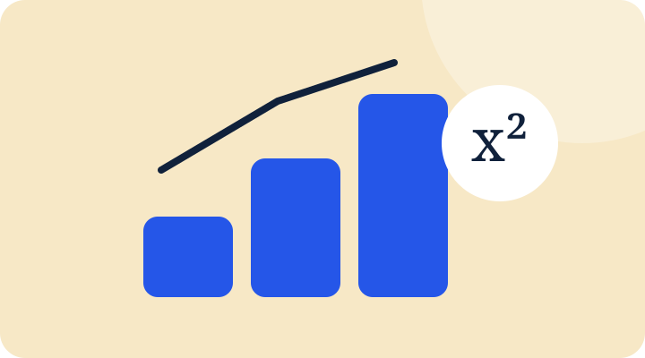

WORDS → IDEAS
Make the meaning click.
Explore a quotation, test an interpretation and build a stronger answer.
Explore GCSE EnglishFocused online tuition for GCSE, 11+ and Primary pupils, built around what each student actually needs to understand, practise and improve.
Clear teaching. Active thinking.
Plenty of lightbulb moments.
Explore a quotation, test an interpretation and build a stronger answer.
Explore GCSE English
Turn a tricky problem into a method you can explain and use.
Explore GCSE MathsBuild secure foundations through clear explanations and purposeful practice.
Explore Primary tuitionStart with the stage your child is at. Each route leads to focused support rather than a generic package.
Target gaps, strengthen subject knowledge and practise exam skills that convert understanding into marks.
Explore GCSE tuition →Preparation shaped around the actual school or local entrance test, with English, maths, reasoning and interview support where relevant.
Explore 11+ tuition →Build secure foundations in English and maths, independent thinking and readiness for the next stage of school.
Explore Primary tuition →Find the misconceptions, knowledge gaps or exam habits holding progress back.
Teach the idea clearly, then model the thinking rather than just supplying an answer.
Move from guided examples to independent work while support gradually reduces.
Use precise feedback and the next task to turn mistakes into the next lesson target.
Find the exact barrier before choosing the task.
Daniel is a PGCE-qualified educator with experience including Head of English and senior educational leadership roles.
Meet the founder →Secure understanding and exam technique should reinforce each other.
Marking matters when it leads to a clearer target and better subsequent work.
Lessons become harder when understanding is secure and slow down when it is not.
Parents should understand the broad priorities without every lesson becoming a lengthy report.
Detailed guides built around real exam and entrance-test skills, not filler written only to attract search traffic.
Send a short enquiry with year group, subject and the main area of support.
Enquire about tuition →